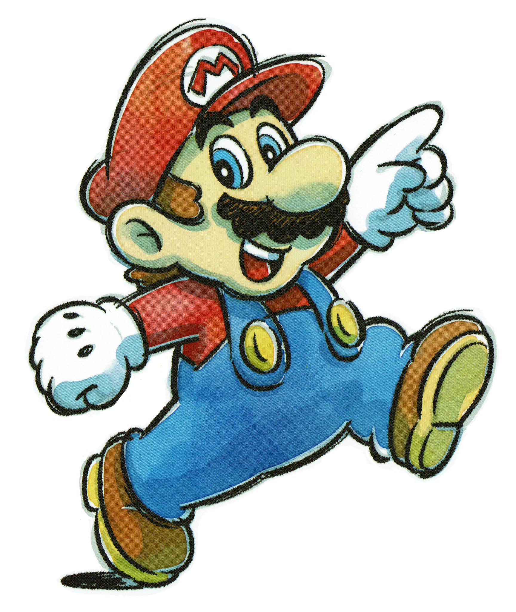

| Nombre: | Año |
|---|---|
| Super Mario Bros. | 1985 |
| Super Mario Bros. 2: The lost levels | 1986 |
| Super Mario Bros. 2 | 1988 |
| Super Mario Bros. 3 | |
| Super Mario Land | 1989 |
| Super Mario World | 1990 |
| Super Mario Land 2: 6 Golden Coins | 1992 |
| Super Mario 64 | 1996 |
| Super Mario Sunshine | 2002 |
| New Super Mario Bros. | 2006 |
| Super Mario Galaxy | 2007 |
| New Super Mario Bros. Wii | 2009 |
| Super Mario Galaxy 2 | 2010 |
| Super Mario 3D Land | 2011 |
| New Super Mario Bros. 2 | 2012 |
| New Super Mario Bros. U | |
| Super Mario 3D World | 2013 |
| Super Mario Odyssey | 2017 |
| New Super Mario Bros. U Deluxe | 2019 |
| Super Mario 3D World + Bowser's Fury | 2021 |
| Super Mario Bros. Wonder | 2023 |
| Derechos reservados © |